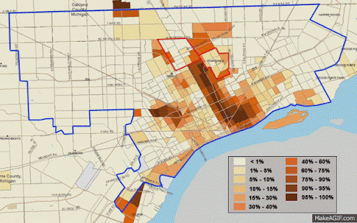
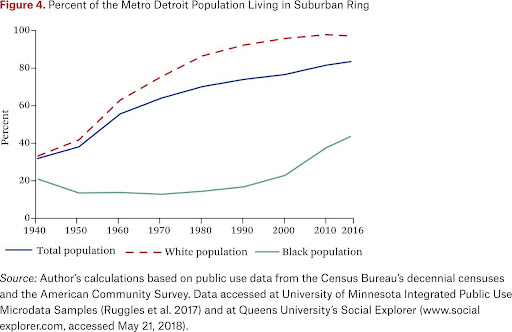
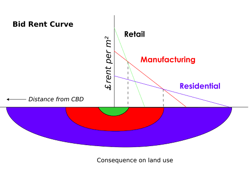
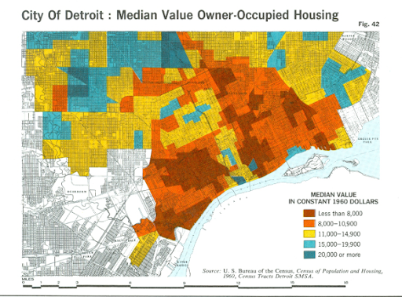
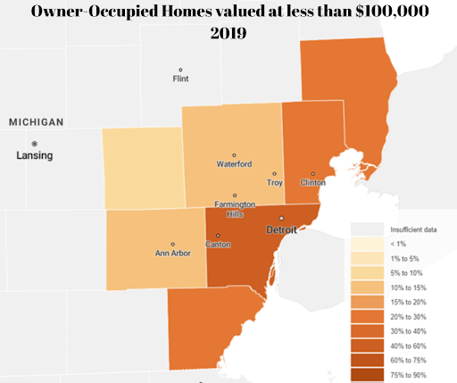

Detroit is the largest city within the US state of Michigan. Being located in the midwest, it is the home to one of the earliest lands awarded to the United States. The city itself was founded in 1837, being generally a white-centred populous and slowly becoming a hub for commerce and industry. It was the centre of automation within the US and was home to one of the most populated cities in the nation. However, to understand why the current situation – in which homes are being sold for a dollar – we have to understand the cultural shift, the movement of industry, socio-economic changes, and the current real estate world of Detroit.
The socio-economic change can be traced back to the cultural shift which occurred from the industrial movement and the end of segregation.
In early part of the 20th century, the city was highly dependent on the automotive industry. They did not have a diverse economy, and when the automotive industry moved away, a lot of people lost their jobs. There was a rapid increase in the unemployment rate within the city. Initially, these companies had their business setup in Detroit as the access to the Great lake allowed easier production of heavy metals. However, the globalisation and the drastic increase of labour costs ( from unionisation) pushed out the larger firms. Where the city now was forced to depend on other smaller sectors of industry. However, these smaller industries too left the city, as the increasing threat from riots (like the 1967 Detroit riots) made it harder for smaller business to continue working. The graph below shows how the total employment of the city slowly moved away from manufacturing.
The white flight refers to the mass movement of the white population in the northern states into suburbs as there were more and more African Americans moving into the cities. In Detroit, pre the 50s era, the city was predominantly dominated by the white population. Being about 90.7 % white. However, as more and more African Americans were moving into the city – the white population was moving out.
Graph showing how the black population increased within the city as time went on. This can be explained by race, American idealism and the Burgess Model. In those times, for white Americans, the perfect life – having the social prestige – was to own a house. That dictated their social standing. As the city of Detroit had more minorities coming into the city, the local poverty and homelessness rate increased. To control the increasingly rapid issue, the government introduced many social programmed, such as capping rent to a certain limit, or government subsidised living. This lowered the overall prestige behind houses within the city, altering the mindset of the white population. Such that they moved out from the inner cities into the middle income circle of the Burgess Model.
Privacy Settings The Burgess Model assumes that the center of a city would be the Central Business District (CBD), and as you move away from it, you come to a more residential living area. The migration of the white population out the city could also be viewed as the middle class moving out, following Burgess’s model, yet it also has a large social meaning. As explained earlier, the incoming minorities was a factor in the migration of the white population, yet it is – in those times – a direct result of racist and segregative views of the population. Meaning the situation is a result of both the prediction of a model, and the social relationship between two social groups.
The movement of the white and black population into suburbs as time progressed. Regardless, this migration forced these people to sell their homes at lower costs. And when a whole neighbourhood sold their homes at lower mean price, the property value of the location decreased. The decrease also pushed down the property tax revenue of the city for that specific neighbourhood. So when this happened all around the city, the whole city lost a lot of monetary value on their land.
This decrease in land/house value, caused property tax income for the city to take a toll. On average, property tax is one of the largest percentages of a city’s tax revenue. As such, Detroit was not able to provide funding for social services. Sectors of government, such as the police and fire departments, were not able to function at their full capacity. Which caused more and more of the neighbourhoods to turn unsafe. At the same time, as Detroit had its communities spread out – being one of the most spread-out urban areas in the US – the city wasn’t able to properly fund schools and recreational facilities for each community. A more spread out community would imply more schools and social services to be built and managed. Detroit, with its already damaging economy because of the automotive industry, was not able to keep up such a demand. Forcing students from a lower income families to either leave schools (with reasons ranging from the need to support their family or no access to proper educational facilities) and take up crime as means to survive. This itself increased the average crime rate within the city, bringing the already damaged house prices. This persisted for many decades, and over time, some houses had decreased to a point where they could have been sold for a dollar.
Which brings in the current situation. To at least earn a degree of money from these places, the city had placed the houses at unbelievably low prices. Which, if bought, would have brought a certain amount of property tax. The $1 houses are the result of the city trying to generate a certain level of profits from these buildings. The tax revenue from those regions are much higher than their selling price. Being on average $60,000, which helps the city produce some profit to be used in improving the communities it surrounds.
Trying to look at the concentric zone model, we see how cities generally would have the highest rent in the CBDs. A descriptive graph of the trend is shown below:
However, for Detroit, such trends are not applicable. As seen in this illustration from the 1960s:
The image presents how regions closer to the centre (the ones closer to the river) are much cheaper. Which disobeys Bid-rent theory, showcasing a clear urban decomposition.
More current data ( graph above) still presents how regions near Detroit still have lower property value. The illustration shows the percentage of homes valued at less than $100,000, where Detroit is under the bracket of 75-90%.
Nonetheless, currently, the property values have been rising within the city. Recent data ( from 2021 ) showed how the property value had risen by an average of 8% throughout the city.
In summary; the increasing movement of business to outskirts of Detroit in combination with white flight, had created a situation where the city government was not able to maintain the neighborhoods within the city. This made the communities inside Detroit more dangerous (less funding for police -> more crime ) and harder to attract buyers. The city, in an attempt to earn something, decreased the property value to unbelievable prices – in hopes to profit from property tax.